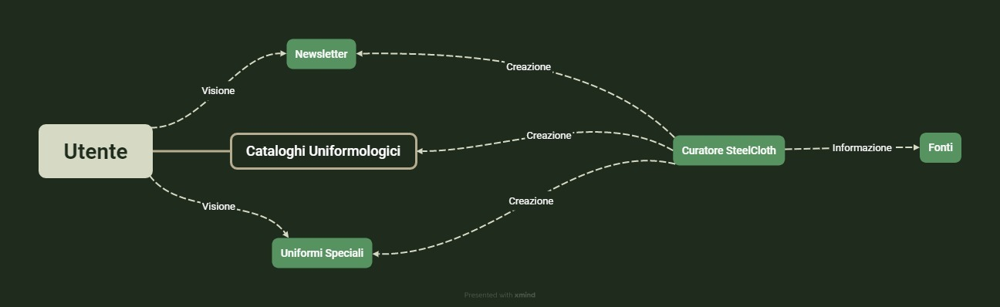
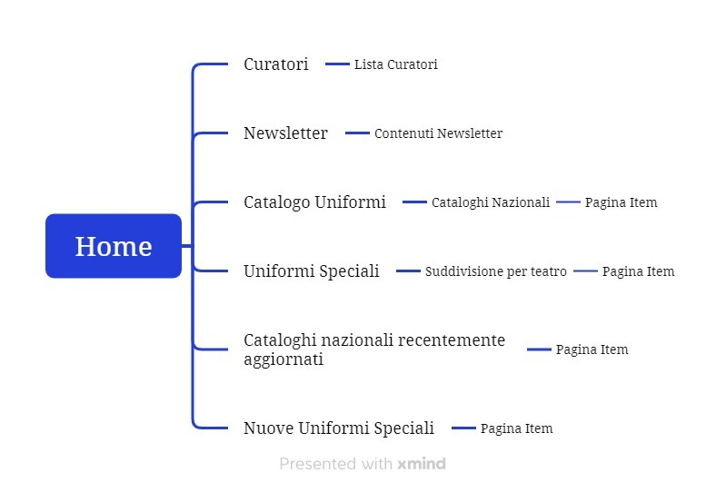
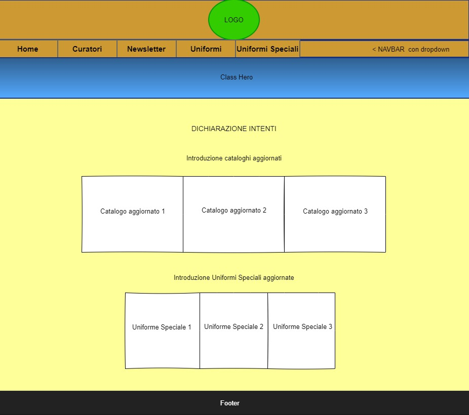
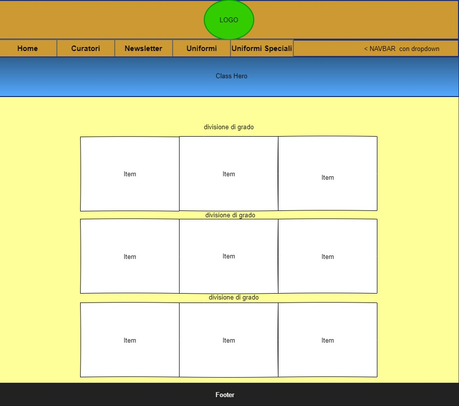
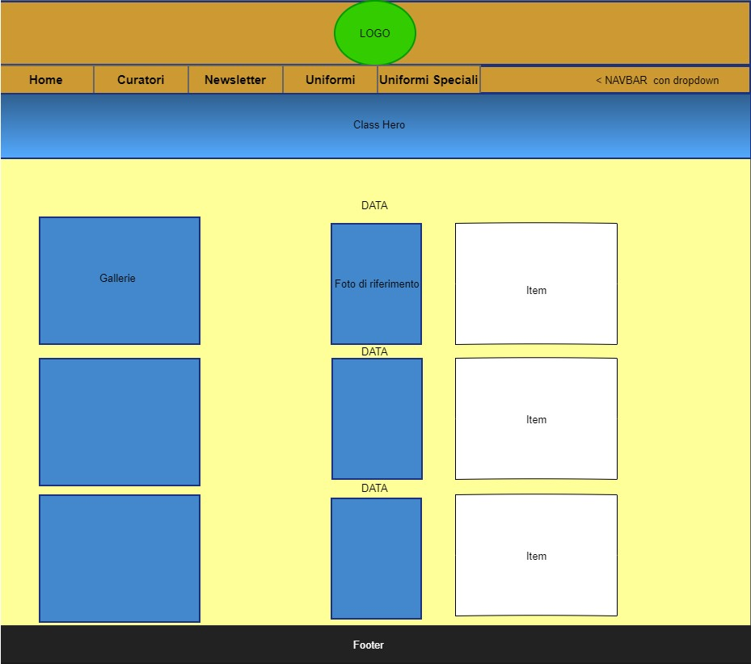

Web Project Plan
Brief
- Finalità e obiettivi del progetto: Raccogliere le uniformi degli eserciti protagonisti della Seconda Guerra Mondiale.
- Pubblico di riferimento: Rievocatori di tutte le età.
- Accesso alla risorsa: Il sito è pensato per essere un catalogo d'ausilio alle ricerche uniformologiche, quindi è progettato per piattaforma fissa.
- Modalità di raccolta dei contenuti e dei dati: Contenuti (Google Immagini, Reddit, Youtube, libri didascalici) raccolti in cataloghi commentati.
Benchmark
Struttura
Mappa Concettuale

Schema Dipendenze

Le Categorie
- Nome: il nome dell'uniforme
- Disegnatore: il disegnatore dell'uniforme
- Soggetto: il tipo di indumento
- Mandante: il mandante del design
- Data: la data di edizione dell'uniforme
- Tipo di Uniforme: il tipo di uniforme
- Coverage: le aree in cui i soldati hanno prestato servizio con l'uniforme
Layout
Wireframe Home

Wireframe Catalogo

Wireframe Item

Usabilità
- Serenità cromatica: su SteelCloth tutto, a partire dal logo sino alle immagini, è combinato in modo da non infastidire l'occhio dell'utente con colori fuori posto.
- Facilità di navigazione: l'interfaccia di SteelCloth è incredibilmente intuitiva, dando la possibilità all'utente di navigare rapidamente da e verso i contenuti.
- Ricchezza della galleria: l'importanza dell'immagine in uniformologia è cruciale, e per questo le gallerie di SteelCloth sono sempre ricche di esempi e curiosità fotografiche.
Per non infastidire il lettore, si è optato per un font di media dimensione sans-serif, in modo da non porre troppo stimolo all'occhio durante la lettura
Servizi
L'utente può interagire con le gallerie dei cataloghi e di tutti i caroselli.